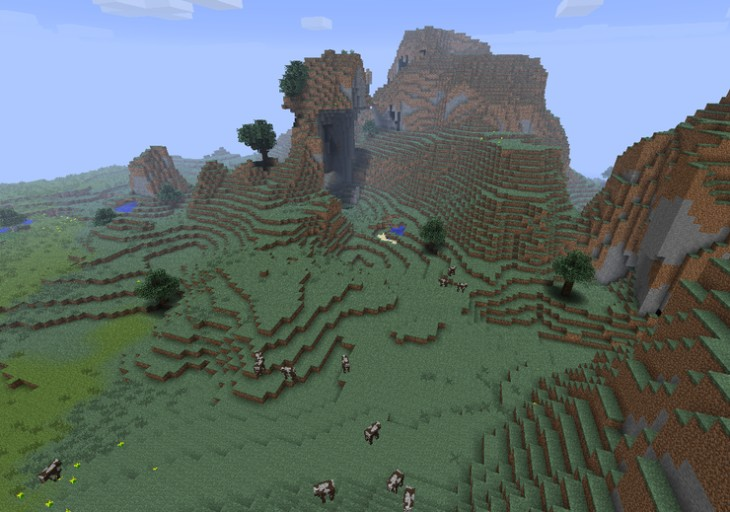

<마인크래프트>
- 마인크래프트란?
- 마크의 역사
Mojang 스튜디오에서 2011년 정식 발매한 샌드박스 형식의 비디오 게임.
이름처럼 채광(Mine)과 제작(Craft)을 하는 게임으로 흔히 알려져 있다.

모든 것이 네모난 블록으로 이루어진 세계에서 혼자, 혹은 여럿이 생존하면서 건축, 사냥, 농사, 채집, PvP, 탐험, 회로 설계
또는 직접 게임을 제작하는 등 정해진 목표 없이 자유롭게 즐길 수 있다.
다시 말해 마인크래프트에는 정해진 목적과 스토리가 사실상 없다.
플레이어가 목적을 스스로 만들어내서 그것을 이루어야 재미를 느낄 수 있는 게임이다.
게임의 목적과 스토리를 중요하게 여기는 플레이어에겐 진입장벽으로 다가올 수 있다.
그나마 외전으로 특별한 목적을 가진 게임들이 제작되어 해소가 가능하긴 하다.
마인크래프트 던전 등. 장기간의 업데이트 이후 추상적으로나마 엔딩이 주어졌지만
그럼에도 마인크래프트라는 게임은 기본적으로 특별한 목적과 스토리가 없는 것과 마찬가지인 게임이다.
플레이어가 일반적으로 상상할 수 있는 범위를 아득히 초월하는 넓은 스테이지가 주어진 게임이다.
플레이어가 창의력으로 게임의 컨텐츠를 만들 수 있는 범위는 수치화가 불가능한 수준이고
마인크래프트의 데이터를 수집한 위키는 한 사람이 읽기엔 너무 부담스러울 정도로 데이터가 많다.
땅 넓이만 보면 지구의 8배 넓이 정도 된다.
플레이어가 제작자의 예측 범위를 한참 넘어서는 플레이가 충분히 가능한 게임이며, 실제로 플레이어들은 그렇게 하고 있다.
2020년 기준 모든 플랫폼에서 2억 장 이상 판매된 역대 가장 많이 팔린 비디오 게임이며,
2020년 5월 기준 활동하는 평균 이용자 수가 1억 2,600만 명을 돌파할 정도로 전 세계 최고의 인기 게임 중 하나이다.
더불어 미국 TIME 선정 최고의 비디오 게임 10선과 50선에 모두 이름을 올렸으며,
메타크리틱 선정 최고의 비디오 게임에 뽑히는 등 작품성과 파급력을 동시에 잡은 게임으로 평가받고 있다.
한국에서 유행한 해외 인기 게임 중 가장 긴 전성기를 자랑한 게임이기도 하다.
2021년 12월 15일 기준 마인크래프트는 유튜브 조회수 1조 회를 돌파한 첫 게임이 되어 유튜브에서 하루 동안 로고 변경과 헌정 영상으로 이를 기념했다.